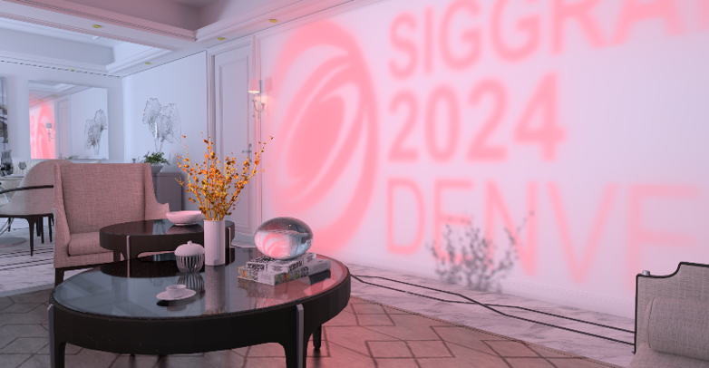
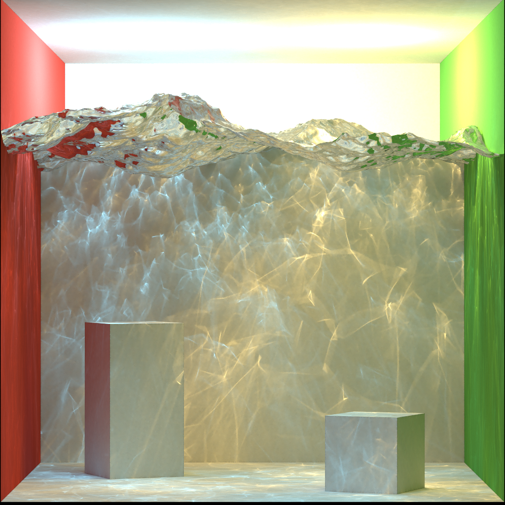

|
Hi! I am a first-year Computer Science Ph.D. student at NYU,
advised by
Prof. Qi Sun
in the
Immersive Computing Lab.
Prior to NYU, I received my Bachelor's degree with honors from
|

|
|
|
Yunxiang Zhang*, Bingxuan Li*, Alexandr Kuznetsov, Akshay Jindal, Stavros Diolatzis, Kenneth Chen. Anton Sochenov, Anton Kaplanyan, Qi Sun† Paper / Code SIGGRAPH 2025 In this work, we present Image-GS, a content-adaptive neural image representation using anisotropic 2D Gaussians, offering high memory efficiency, fast random access, and flexible fidelity control for real-time graphics and machine perception. |
|

|
Fujia Su*, Paper / Project / Code / Video ACM Transactions on Graphics (SIGGRAPH 2024) In this work, we propose a novel sampling method to robustly handle challenging specular/glossy paths in bidirectional path tracing (BDPT), ensuring unbiased rendering and significantly improving sampling efficiency. |
|  |
We present EasyRender, a scalable, high-performance ray tracing renderer built upon OptiX 8.0, featuring modular architecture, support for pbrt-v3 scenes and Disney Principled Materials, and implementations of advanced physically based rendering algorithms. |

|
This project explores the further applications of ROMA in rendering, implemented on Mitsuba 0.6. We primaryly focused on enhancing the performance of ray tracing using ROMA, a novel acceleration method. |
|
I enjoy reading, gaming, photography and other nerdy stuffs outside of work. |